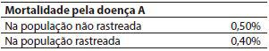
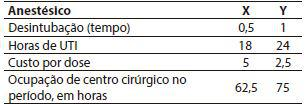
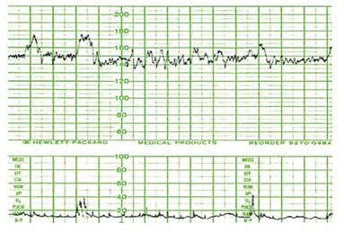
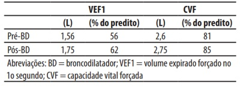
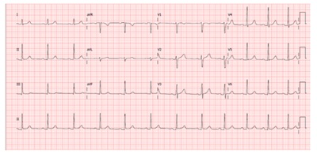

Questão 1 · Erros Aleatórios · 4000129822Quando comparamos os níveis de colesterol sérico em duas amostras de pacientes sedentários e sicamente ativos, o valor-p associado ao teste estatístico utilizado indica:
A Se os dados são reais ou fruto de algum procedimento amostral falho.
B Se os dados utilizados provêm de uma amostra representativa ou não-probabilística da população de referência.
C O intervalo de valores onde está a verdadeira média populacional, desde que os dados tenham distribuição normal.
D Se os resultados podem ser empregados na prática clínica ou se estão afetados por viés metodológico.
E A probabilidade de que a diferença observada entre os grupos seja devida à variação ou erro amostral.
Questão 2 · Sensibilidade · Valor Preditivo Positivo · Especif icidade · 4000129821Considere as afirmativas abaixo: 1. O conhecimento da distribuição dos agravos de saúde na população de origem dos pacientes de um consultório é desnecessário para conhecer a probabilidade de acerto diagnóstico. 2. Desconsiderando-se qualquer outra informação, a probabilidade de uma pessoa qualquer ter uma determinada doença é igual à prevalência da doença na população de origem da pessoa. 3. Um teste altamente sensível e específico permitirá sempre um alto valor preditivo positivo, independente da prevalência da doença. Assinale a alternativa que indica todas as afirmativas
A É correta apenas a afirmativa 1.
B É correta apenas a afirmativa 2.
C É correta apenas a afirmativa 3.
D São corretas apenas as afirmativas 1 e 3.
E São corretas as afirmativas 1, 2 e 3.
Questão 3 · Testes Diagnósticos · 4000129820Suponha uma pessoa que vai à consulta na Unidade de Saúde da Família de sua área de residência, com história de coriza, dor na garganta, febrícula, mialgia e cansaço. A probabilidade de que uma pessoa qualquer nessa situação tenha Covid-19 é:
A Impossível de ser estimada.
B Menor que a prevalência de pessoas com Covid-19 naquela Área de Saúde da Família.
C Igual à prevalência de pessoas com Covid-19 naquela Área de Saúde da Família.
D Maior que a prevalência de pessoas com Covid-19 naquela Área de Saúde da Família.
E Independente da prevalência de pessoas com Covid-19 naquela Área de Saúde da Família.
Questão 4 · Sensibilidade · 4000129819Suponha um teste PCR-RT de material coletado por swab nasal para a identi cação da presença do vírus SARS-COV_2, agente etiológico da Covid-19. Considere que a sensibilidade é maior se o teste for realizado no 7º dia de início dos sintomas do que no 2º ou 15º dias. Isso significa que:.
A A probabilidade de um resultado falso-positivo é maior se a coleta for realizada no 2º ou 14º día de início dos sintomas.
B A probabilidade de um resultado falso-positivo será menor se a coleta for realizada no 2º ou 14º dia de início dos sintomas.
C A probabilidade de um resultado verdadeiro-positivo é maior se a coleta for realizada no 7º dia que no 2º ou 14º dia de início dos sintomas.
D A probabilidade de que a pessoa com um teste positivo não tenha a doença será maior se a coleta foi realizada no 7º que no 2º ou 14o dia de início dos sintomas.
E A probabilidade de que a pessoa tenha a doença será maior se um teste com resultado positivo tiver sido coletado no 2º ou 14º dia de início dos sintomas.
Questão 5 · Medicina Preventiva · Epidemias · 4000129818Assinale a alternativa
A Denomina-se surto epidêmico quando a duração da epidemia é restrita a um mês.
B As ações de controle e vigilância, idealmente, devem se encerrar em até 7 dias após se retornar ao nível endêmico.
C A regressão de uma doença infecciosa se dá em até 48 h após se atingir o limiar máximo de incidência.
D A pandemia ocorre quando há propagação da doença infecciosa com uma larga distribuição espacial e, também, por 90 ou mais dias.
E Uma epidemia pode durar um intervalo de tempo que compreenda horas, dias ou, até mesmo, meses.
Questão 6 · Sensibilidade · Valor Preditivo Positivo · Especif icidade · 4000129817Considere dois grupos previamente selecionados, o primeiro de indivíduos sem diabetes com média de glicemia de 90 mg/dL com 10 mg/dL de desvio padrão e outro de diabéticos com média de 140 mg/dL, com 15 mg/dL de desvio padrão. Um pesquisador considera diabético todos os que tiverem 130 mg/dL ou mais independentemente do grupo que pertencerem enquanto um segundo considera diabético a partir de 100 mg/dL. É correto
A Especificidade e sensibilidade.
B Sensibilidade e especificidade.
C Especificidade e Valor Preditivo Positivo.
D Sensibilidade e Valor Preditivo Negativo.
E Valor Preditivo Positivo e Valor Preditivo Negativo.
Questão 7 · Medicina Preventiva · Vigilância Epidemiológica · 4000129816O desenvolvimento e a aplicação de vacinas são passos importantes para o controle de muitas doenças transmissíveis. Assinale a alternativa correta sobre os ensaios clínicos, estudos epidemiológicos essenciais para o seu desenvolvimento.
A Em sua fase I, grande amostra de voluntários recebe a vacina em estudo para se verificar sua eficácia.
B A fase II tem o objetivo de se verificar a atividade imunogênica da vacina com um limitado número de participantes.
C Costumam ser randomizados, de modo que o grupo placebo e o grupo experimento tenham características próprias e distintas entre si.
D Após iniciar a comercialização do produto encerra-se o monitoramento da vacina, mas os serviços de saúde devem estar organizados para receber eventuais casos de reações adversas.
E Ao iniciar a fase III o medicamento já tem aprovação para ser comercializado, desde que tenha demonstrado segurança nas fases anteriores.
Questão 8 · Tipos de variáveis · 4000129815A classificação de variáveis em categóricas ou numéricas é importante para:
A Escolher os melhores recursos para análise de sua distribuição e selecionar os testes estatísticos que serão empregados no estudo.
B Distinguir aquelas que têm distribuição normal daquelas que seguem o padrão de Moivre.
C Entender os valores de probabilidade, os quais indicarão, com maior chance, qual o valor típico de um conjunto de dados.
D Interpretar corretamente a taxa de falsos negativos e falsos positivos de um estudo de validação diagnóstica.
E Identificar valores extremos, que não devem ser considerados na avaliação de um conjunto de pacientes e seus parâmetros clínicos.
Questão 9 · Rastreamento mamográf ico · 4000129814Em uma consulta médica na atenção primária à saúde, uma mulher de 55 anos relata nunca ter feito mamogra a, que não tem antecedentes familiares de câncer de mama e que não tem opinião formada sobre fazer ou não o exame. Embora haja polêmica na literatura científica sobre o tema, e por causa dela, assinale a conduta mais indicada para o médico:
A Mostrar a necessidade urgente da realização do exame.
B Mostrar o amplo balanço danos × benefícios favorável aos benefícios desse rastreamento, sugerindo que o realize.
C Mostrar o balanço danos × benefícios desfavorável ou duvidoso desse rastreamento sugerindo que não o realize.
D Mostrar o balanço danos × benefícios fracamente favorável desse rastreamento sugerindo que o realize.
E Mostrar para ela os danos e benefícios potenciais do rastreamento para que ela decida de forma informada.
Questão 10 · Medicina Preventiva · Epidemias · 4000129813Assinale a alternativa
A Contrariamente à epidemia, que é temporalmente ilimitada, a endemia é restrita a um intervalo de tempo determinado.
B A incidência de uma doença pode diminuir e sair do nível epidêmico pela importação de casos alóctones.
C A eventual endemicidade obtida após o decréscimo da incidência da doença pode se dar até mesmo em níveis inferiores à eclosão epidêmica.
D Numa curva epidêmica, uma primeira etapa tem um ramo ascendente de casos que, pela história natural das doenças infecciosas, termina dentro de 30 a 60 dias.
E A regressão é a última fase de evolução de uma epidemia e sempre termina com a erradicação da doença.
Questão 11 · Risco Relativo RR Razão de Riscos · 4000129812Uma doença A pode ser rastreada na população (com consequente confirmação diagnóstica e tratamento em estágio assintomático), com impacto na sua mortalidade conforme abaixo: Analise as afirmações baixo: 1. A redução do risco relativo (RRR) do rastreamento da doença A é de 20%. 2. A redução do risco absoluto (RRA) do rastreamento é de 0,1%. 3. O número necessário para evitar uma morte pela doença A nessa população (o número necessário para rastrear – NNR - é de 1000 pessoas). Assinale a alternativa que indica todas as afirmativas

A É correta apenas a afirmativa 2.
B São corretas apenas as afirmativas 1 e 2.
C São corretas apenas as afirmativas 1 e 3.
D São corretas apenas as afirmativas 2 e 3.
E São corretas as afirmativas 1, 2 e 3.
Questão 12 · Abordagem da paciente com queixa de úlcera genital · 4000129811Uma paciente de 24 anos, solteira, nuligesta, pro- cura atendimento na UBS por lesões dolorosas na vulva. Ao exame, identi ca-se a presença de múltiplas ulcerações na face interna do grande e pequeno lábio esquerdos, de bordas irregulares e menores que 1 cm, com secreção purulenta fétida e extremamente dolorosas. O diagnóstico mais provável é:
A Cancro duro.
B Cancro mole.
C Donovanose.
D Úlcera de Lipschutz.
E Síndrome de Behçet.
Revisar: possível letra faltando em enunciado
Questão 13 · Métodos de indução do parto · Métodos para maturação cervical · Obstetrícia · 4000129810Secundigesta, com uma cesariana anterior há seis anos, comparece à maternidade assintomática com idade gestacional de 41 semanas e 3 dias, apre- sentando dados de um pré-natal de risco habitual. Ao exame físico, altura de fundo uterino de 35 cm, atividade uterina ausente e toque vaginal com índice de Bishop clássico de 3. Exame de cardiotocogra a com categoria 1, índice de líquido amniótico de 5,5 cm e apresentação cefálica com dorso à esquerda. Quanto à indução do parto, assinale a alternativa correta.
A A técnica de Krause (maturação do colo uterino com colocação de sonda) está indicada nessa situação.
B Misoprostol via vaginal, na dose de 25 mcg a cada 4 ou 6 horas, está indicado, pois o índice de Bishop clássico está menor que seis.
C A história obstétrica, associada ao índice de líquido amniótico e ao colo desfavorável, contraindicam o processo de indução do parto.
D Dilatadores osmóticos, como laminárias, estão contraindicados, pois aumentam o risco de infecção e devem ser restritos aos casos de óbito fetal.
E O Misoprostol via sublingual, na dose de 50 mcg a cada 4 ou 6 horas, quando disponível, seria preferível, por apresentar menores riscos.
Questão 14 · Prevenção Quaternária · 4000129809Evitar a medicalização e as possíveis iatrogenias da abordagem biomédica dos problemas escolares de comportamento e de aprendizagem das crianças via diagnóstico de ‘Transtorno do Dé cit de Atenção com Hiperatividade’ (TDAH) e seu tratamento farmacológico pode ser considerada uma forma de:
A prevenção primária.
B prevenção secundária.
C prevenção terciária.
D prevenção quaternária.
E promoção da saúde.
Questão 15 · Processo saúdedoença · 4000129808Um dos paradoxos envolvidos nas atividades preventivas (chamado paradoxo da prevenção) pode ser resumido do seguinte modo:
A São algumas doenças que realmente têm comportamento paradoxal por seu alto risco.
B Muitas pessoas com baixo risco de adoecer produzem mais doenças e/ou mortes na população que as poucas com alto risco.
C Tratar as pessoas de alto risco diminui, apesar de poucas, efetivamente a maior parte da morbimortalidade.
D Tratar as pessoas de baixo risco não impacta na morbimortalidade, devido à pequenez do risco, embora elas sejam muitas.
E Poucas pessoas de baixo risco de adoecer mas que são pobres produzem mais doenças e mortes do que as pessoas com alto risco.
Questão 16 · Avaliação do risco gestacional · Assistência prénatal · Antecedentes pessoais · 4000129807Primigesta com 13 semanas comparece para iniciar o acompanhamento pré-natal. Está assintomática e nega antecedentes médicos. Ao exame físico, IMC normal, PA 140/90 mmHg, útero compatível com 13 semanas de gestação e batimentos cardíacos fetais perceptíveis ao sonar. Refere alimentação equilibrada e adequada. Qual deve ser a prescrição?
A Ácido fólico 5 mg/dia.
B Hidroclorotiazida 25 mg/dia.
C Ácido acetilsalicílico 150 mg/dia.
D Cálcio 25 mg/dia e ômega 3 500 mg/dia.
E Nenhuma medicação no momento.
Questão 17 · Obstetrícia · PréEclâmpsia · 4000129806Primigesta com 19 anos e idade gestacional de 32 semanas, diabética tipo 1 é trazida ao pronto atendimento após convulsão tônico clônica generalizada. Na admissão apresentava-se lenti cada, mas consciente, com PA 140/90 mmHg, SaTO2 = 99%, altura de fundo uterino de 30 cm, batimentos cardíacos fetais em 144 bpm, glicemia capilar de 80 mg/dl. Foi iniciado sulfato de magnésio e após a dose de ataque de 4 g endovenosa, apresentou novo episódio de convulsão tônico clônica generalizada. De acordo com o protocolo FEBRASGO atual, deve-se
A Administrar Fenitoína (250 mg/5mL) 50 mg/ minuto, IV, até 15-20 mg/kg de dose total.
B Administrar uma dose intramuscular de 4 g de sulfato de magnésio e manutenção com 1 g/hora endovenosa.
C Aumentar manutenção para 5 g/hora e solicitar exame de imagem para avaliar Sistema Nervoso Central.
D Considerar possibilidade de síndrome conversiva ou cetoacidose e administrar benzodiazepínicos.
E Realizar mais 2 g de sulfato de magnésio endovenoso e manutenção com 2 g/hora, endovenosa.
Questão 18 · Assistência ao parto na gestação multipla · Obstetrícia · 4000129805Secundigesta de 34 semanas, com parto normal anterior, agora com gestação gemelar diamniótica e monocoriônica, procura a maternidade com queixa de contrações. Ao exame, dinâmica presente, colo dilatado em 6 cm, esvaecido 50%, medianizado, com primeiro gemelar cefálico. Exame de ultrassonografia realizado na admissão identifica o primeiro gemelar cefálico, pesando 2500 kg, e o segundo gemelar, transverso, pesando 2100 g.
A Realizar cesariana imediata.
B Tocólise para permitir a corticoterapia.
C Tentar realizar a versão fetal externa do segundo gemelar, para permitir o parto vaginal.
D Parto vaginal com extração podal do 2° feto se necessário.
E Sulfato de magnésio antes de realizar a cesariana.
Questão 19 · Rotura prematura de membranas ovulares RPM · Intercorrências obstétricas obstetrícia patológica · 4000129804Obstetrícia Tercigesta de 33 semanas e 5 dias, com dois partos normais anteriores, duas consultas de pré-natal, é admitida em trabalho de parto. Relata rotura prematura de membranas há 2 dias. Ao exame físico, TAX: 38.9°C, FC: 110 bpm, FR: 22 irpm, dinâmica uterina presente, batimentos cardíacos fetais de 168 bpm, colo com dilatação de 6 cm, macio, central, 60% de apagamento. Apresenta saída vaginal de líquido amniótico claro em pequena quantidade e com odor fétido. Sem alterações nos outros sistemas. No que se refere à abordagem do quadro obstétrico exposto, qual das alternativas abaixo representa a melhor conduta nesse momento?
A Realização de tócolise imediata, apenas para permitir a corticoterapia.
B Realização imediata de cesariana, por causa da taquicardia fetal e das condições maternas.
C Início de antibioticoterapia e acompanhamento do trabalho de parto.
D Sulfato de magnésio para neuroproteção e amnioinfusão para melhorar a taquicardia fetal.
E Utilização do vácuo extrator para acelerar o trabalho de parto.
Questão 20 · Diagnóstico de distocias no partograma · Obstetrícia · Partograma · 4000129803Parturiente, 38 anos de idade, 40 semanas, primi- gesta, apresenta evolução do trabalho de parto conforme partograma da figura. Exame físico: sinais vitais preservados, altura uterina 35cm, feto único. Avaliação da bacia: conjugado diagonal medindo 13 cm, espinhas ciáticas médias, ângulo subpúbico de 90° e medida do diâmetro bituberoso de 11 cm. A distocia diagnosticada pelo partograma e a provável causa, respectivamente, são:
A Fase ativa prolongada, desproporção cefalopélvica absoluta.
B Parada secundária da dilatação, desproporção cefalopélvica relativa.
C Parada secundária da descida, defletida de primeiro grau.
D Parada prolongada da dilatação, vício pélvico relativo.
E Fase ativa prolongada, defletida de primeiro grau.
Questão 21 · Processo saúdedoença · 4000129802Sobre a estratégia que Geoffrey Rose classificou como ‘estratégia preventiva de alto risco’, é correto afirmar que:
A O risco não é considerado na estratégia de Rose8.
B Tem grande impacto na morbimortalidade da doença na população.
C É caracterizada pela sua grande capacidade de predizer o futuro dos indivíduos.
D Seu sucesso é permanente, pois atua nas causas e determinantes do problema.
E Ela evita intervir nas pessoas e grupos populacionais que não têm alto risco.
Questão 22 · Obstetrícia · PréEclâmpsia · 4000129801Primigesta de 24 semanas apresenta dor difusa em abdome superior, cefaleia com alterações visuais, náuseas, vômitos, mucosas hipocoradas e anictéricas, temperatura 38,5 °C, PA 150/90 mmHg, glicemia 95 mg/dL, plaquetas 15.000, Hb 7,1 g/dL, 5% de esquizócitos, LDH 1.850 UI/L, TGO 40 UI/L, TGP 55 UI/L e relação proteinúria/creatinúria 0,41 mg/mg. Qual o diagnóstico mais provável?
A HELLP síndrome
B Hepatite aguda por drogas
C Fígado gorduroso agudo da gravidez
D Púrpura trombocitopênica trombótica
E Síndrome hemolítico-urêmica relacionada à gravidez
Questão 23 · Redução Relativa do Risco RRR ou Ef icácia · 4000129800Uma análise de e ciência, comparando dois anestésicos, obteve os seguintes resultados, pela comparação de 50 cirurgias do mesmo tipo de procedimento, igualmente distribuídas: O gestor se decide pela adoção do anestésico Y. Você:

A Concorda, porque a eficiência só se preocupa com os custos.
B Concorda, porque o custo do anestésico Y é metade do outro anestésico.
C Discorda, porque a melhor relação custo produção se dá com o anestésico X.
D Discorda, porque a diminuição de horas em UTI permite melhor utilização dos leitos.
E Considera que os dois são equivalentes, do ponto de vista da eficiência.
Questão 24 · Obstetrícia · Perf il biof isico f etal PBF · 4000129799Gestante de 35 semanas, acompanhada no ambulatório de pré-natal de alto risco por diabetes gestacional, apresenta exame de ultrassonogra a com duração de 30 minutos, demonstrando feto único, apresentação cefálica, índice de líquido amniótico de 32 cm (maior bolsão vertical em 7,8 cm), peso estimado fetal no percentil 96, quatro movimentos fetais, um episódio de movimentos respiratórios rítmicos e um episódio de extensão e flexão das pernas. Exame de cardiotocografia conforme a figura. Assinale a alternativa que contém o valor correto do perfil biofísico fetal clássico (Manning, 1980).

A 06
B 07
C 08
D 09
E 10
Questão 25 · Avaliação da Qualidade em Atenção Primária à Saúde · 4000129798Na tríade proposta por Donabedian, de avaliação em saúde feito por Estrutura - Processos - Resultados, um estudo foi conduzido com os seguintes indicadores: Taxa de reinternação num período de 30 dias após a alta; existência de es gmomanômetro em todos os consultórios ambulatoriais; % de casos de infecção hospitalar; leitos para internação de doentes mentais; taxa de sucesso em atendimento de urgência para AVCs; % altas de pacientes por internação de UTI. A sequência que identifica
A Processo; processo; estrutura; estrutura; resultados; resultados.
B Processo; estrutura; processo; estrutura; resultados; resultados.
C Resultados; processo; resultados; processo; processo; resultados.
D Resultados; estrutura; resultados; processo; resultados; processo.
E Processo; processo; estrutura; resultado; resultado; processo.
Questão 26 · Avaliação da Qualidade em Atenção Primária à Saúde · 4000129797Sobre avaliação custo-efetividade, assinale a alternativa
A Visa determinar a relação entre custos e benefícios decorrentes de intervenções preventivas.
B Visa determinar a viabilidade econômica de intervenções em termos monetários, tanto de custo quanto de benefícios.
C Compara os custos de diferentes intervenções que produzem os mesmos efeitos.
D Avalia duração e qualidade de sobrevida obtidas por diferentes intervenções.
E Diferencia-se das avaliações econômicas em saúde, por se preocupar com o impacto na saúde e não nos custos monetários das intervenções em saúde.
Questão 27 · Trabalho de parto prematuro TPP · Intercorrências obstétricas obstetrícia patológica · Obstetrícia · 4000129796Primigesta de 31 semanas procura atendimento médico com queixa de dor baixo ventre, tipo contração. Ao exame físico: PA: 90/60 mmHg, FC 70 bpm. BCF 146 bpm, duas contrações de 40 segundos em 10 minutos, toque colo centralizado apagado 70%, pérvio 1 cm. Relata diabetes gestacional com controle adequado com dieta. Iniciou-se tocólise com nifedipina. Caso a nifedipina não seja eficiente, assinale a alternativa correta quanto ao uso de tocolítico nessa paciente.
A Existe a contraindicação absoluta de terbutalina, devido à diabetes gestacional.
B O Atosiban tem eficácia maior e menos efeitos colaterais do que a nifedipina.
C Utilizar a Indometacina em substituição à nife- dipina, não ultrapassando 48 h de uso.
D Acrescentar a progesterona vaginal, para potencializar os resultados da nifedipina.
E Indicar via oral um agonista beta2-adrenérgico seletivo e antibióticoterapia endovenosa.
Questão 28 · Outras Resoluções Pareceres e Recomendações do Conselho Federal de Medicina CFM · 4000129795De acordo com a Portaria do CFM de 2015 que define os critérios de indicação de cirurgia bariátrica, assinale a alternativa que indica o paciente que preenche estes critérios:
A Paciente masculino, 14 anos, IMC 44, sem resposta ao tratamento clínico para obesidade, associada a esteatose hepática.
B Paciente masculino, 18 anos, IMC 34, sem resposta ao tratamento clínico para obesidade, associada a doença do refluxo gastroesofageano.
C Paciente feminina, 36 anos, IMC 36, sem resposta ao tratamento clínico para obesidade.
D Paciente feminina, 54 anos, IMC 36, sem resposta ao tratamento clínico para obesidade, associada a incontinência urinária de esforço.
E Paciente feminina, 60 anos, IMC 32, sem resposta ao tratamento clínico para obesidade, associada a asma grave não controlada.
Questão 29 · Hepatologia · 4000129794Em relação aos adenomas hepáticos, é correto afirmar:
A Histologicamente, adenomas possuem ductos biliares e células de Kupffer, e contêm hepatócitos pobres em glicogênio.
B Os adenomas hepáticos são neoplasias sólidas benignas do fígado. Eles são mais comumente vistos em mulheres na pós-menopausa com mais de 50 anos de idade e são tipicamente múltiplos, embora adenomas solitários também possam ocorrer.
C O uso de anticoncepcionais contendo estrogênio, incialmente tido como fator causal na maior parte dos adenomas, não tem influência nenhuma no surgimento deste tipo de lesão.
D A diferenciação entre adenoma e hiperplasia nodular focal é muito importante, porque a hiperplasia nodular focal tem risco de sangramento e malignização requerendo cirurgia, enquanto nos adenomas a conduta é conservadora.
E O novo agente de contraste para ressonância magnética, gadobenato dimeglumina, é eliminado por excreção renal e biliar. Portanto, as lesões hepáticas que contêm hepatócitos com mecanismo de excreção biliar intacto são facil- mente distinguidas de lesões que não os tem. Este agente de contraste melhorou a capacidade de diferenciar o adenoma hepático de hiperplasia nodular focal com alto grau de precisão.
Questão 30 · Avaliação da Qualidade em Atenção Primária à Saúde · 4000129793Se um gestor pretende implantar um programa de saúde com quatro anos de duração, e lhe encomenda uma avaliação no meio do período, e outra ao final, você indicaria:
A Avaliações somativas nos dois períodos.
B Avaliações formativas no dois períodos.
C Uma avaliação somativa no meio do período e formativa no final do período.
D Uma avaliação formativa no meio do período e somativa no final do período.
E Nenhuma das opções anteriores, pois estas avaliações não são aplicadas à saúde.
Questão 31 · Cirurgia metabólica no tratamento do diabetes mellitus · Pacientes candidatos à cirurgia bariátrica · 4000129792Endocrinologia Assinale a alternativa correta em relação aos mecanismos que atuam siologicamente na resolução ou melhora do Diabetes Mellitus tipo II com a realização de by-pass gástrico em Y – Roux.
A Elevação de GIP
B Redução de GLP-1
C Aumento de grelina
D Aumento de adiponectina
E Redução da sensibilidade a insulina
Questão 32 · Medicina Preventiva · Análise estatística · 4000129791O intervalo de confiança é um recurso muito utilizado em bioestatística para:
A Estabelecer a precisão de uma medida estimada no contexto de uma amostra.
B Excluir a possibilidade de viés de seleção nos estudos clínico-epidemiológicos.
C Favorecer a replicação de estudos que tenham refutado a hipótese nula.
D Indicar se os dados foram obtidos por meio de amostragem probabilística.
E Avaliar a concordância entre dois métodos de diagnóstico.
Questão 33 · Pólipos da Vesícula Biliar · Hepatologia · História Clínica · 4000129790Uma paciente, feminina, de 50 anos, vem encaminhada de sua ginecologista, bastante preocupada por ter achado um nódulo em sua vesícula biliar ao ultrassom de abdome. Sem sintomas abdominais, ela traz o ultrassom com a conclusão: múltiplos pólipos de vesícula biliar, o maior de 3 mm, esteatose hepática moderada, o restante sem alterações. Assinale a alternativa correta em relação às patologias da vesícula biliar.
A Se essa paciente do enunciado tivesse uma lesão polipoide maior que 1cm na vesícula biliar, poderia ser acompanhada por ultrassom, não sendo necessário alertá la para necessidade da colecistectomia.
B Em caso de pólipo de vesícula biliar de 2 cm, é indicada a cirurgia que pode ser realizada por vídeolaparoscopia. Caso ocorra pequena perfuração da vesícula biliar basta apenas lavar bem a cavidade com soro fisiológico, sem prejuízo para o resultado da cirurgia.
C A colecistectomia vídeolaparoscópica não está indicada precocemente na colecistite aguda, devido ao maior risco de lesões da via biliar principal.
D Pacientes com cálculos maiores que 1 cm têm risco aumentado de câncer da vesícula biliar, e devem ser indicada a colecistectomia vídeolaparoscopica.
E Os pólipos de colesterol são frequentemente múltiplos, menores que 1 cm, apresentam-se como imagens ecogênicas, pediculadas ao ultrassom, não necessitando de tratamento cirúrgico, podendo ser acompanhadas com ultrassom periodicamente.
Questão 34 · Medicina Preventiva · Epidemiologia · Princípios de Estatística Bioestatística ou Estatística Médica · 4000129789As propriedades da distribuição normal ou curva de Gauss têm sido amplamente utilizadas na prática dos pro ssionais de saúde, pois:
A Servem para estabelecer critérios diagnósticos, baseados na noção de exatidão, ao invés do conceito de precisão estatística.
B Permitem predizer o resultado de intervenções clínicas, especialmente no caso de dados com curtose próxima a zero e coeficiente de assimetria ao redor de três.
C Se aplicam a um conjunto importante de variáveis antropométricas, demográficas e clínicas, incluindo parâmetros serológicos.
D Possibilitam identificar pacientes em situações extremas, cujos valores de algum parâmetro clínico situam-se entre –1 e +1 desvio-padrão da média.
E Fornecem informações valiosas sobre como se comportam quaisquer características dos pacientes acompanhados em algum serviço de saúde.
Questão 35 · Hepatologia · Contraindicações ao transplante hepático · 4000129788Assinale a alternativa correta sobre as contraindicações absolutas do transplante hepático.
A Sepse não controlada
B Disfunção renal severa
C Idade acima de 65 anos
D Neoplasia maligna do fígado
E Condição social que dificulte o pós-operatório
Questão 36 · Anatomia e Fisiologia · Cirurgia · 4000129787Em relação à anatomia do canal anal, o músculo esfíncter externo do ânus é composto por três cama- das denominadas:
A Proximal, média e distal.
B Anterior, medial e posterior.
C Pudenda, elevadora e subcutânea.
D Subcutânea, superficial e profunda.
E Subcutânea, puborretal e pudenda.
Questão 37 · Pediatria · Atendimento Inicial às Vítimas de Queimadura · 4000129786Escolar, 8 anos e 5 meses, sexo feminino, 20 kg, chega ao pronto atendimento trazida pelo SAMU devido a queimaduras extensas por álcool. Paciente apresenta queimaduras de 2° e 3° graus ocupando 60% da área de superfície corpórea. Para o cálculo de hidratação, foi utilizada a Fórmula de Parkland com solução Ringer Lactato. Assinale a alternativa que apresenta esta conduta.
A 1.200 ml nas primeiras 8 horas, e 3.600 ml nas 16 horas seguintes.
B 1.200 ml nas primeiras 4 horas, e 3.600 ml nas 20 horas seguintes.
C 2.400 ml nas primeiras 4 horas, e 2.400 ml nas 20 horas seguintes.
D 2.400 ml nas primeiras 8 horas, e 2.400 ml nas 16 horas seguintes.
E 2.400 ml nas primeiras 12 horas, e 2.400 ml nas 12 horas seguintes.
Questão 38 · Abscesso hepático piogênico · 4000129785Um paciente masculino de 45 anos retorna ao pronto-socorro com dor em hipocôndrio direito e febre, 10 dias após ser submetido a uma apendicectomia complicada em que houve retardo diagnóstico. Foi solicitada uma tomogra a computadorizada de abdome, que demonstrou uma imagem hipodensa de 4 cm no lobo direito, com pequeno nível hidroaéreo, com realce de contraste na periferia, laudada como abscesso piogênico. Em relação a esse caso, é correto afirmar:
A Aproximadamente 60% dos abscessos são monomicrobianos, outros 35% são polimicrobianos e 5% são negativos para cultura.
B O tratamento percutâneo não deve ser utilizado nessa situação.
C A bactéria mais comumente envolvida é a Escherichia coli em dois terços dos casos. Outros organismos comuns incluem Strepto- coccus faecalis, Klebsiella e Proteus vulgaris. Organismos anaeróbicos, como Bacteroides fragilis também são vistos com frequência.
D Quando o antibiótico certo é escolhido por antibiograma, o período de necessidade do antibiótico é curto, de 7 a 10 dias.
E Neste caso, uma hepatectomia será necessária para remoção do tecido necrótico.
Questão 39 · Tratamento · Pediatria · 4000129784Pré-escolar, 5 anos e 2 meses, sexo masculino, é trazido ao pronto atendimento devido a tosse e cansaço. Mãe relata rinorreia hialina, tosse leve e febre baixa há 48 horas. Ao exame físico é possível observar leve estridor inspiratório em repouso, rouquidão, tosse ladrante, moderada retração intercostal, e agitação. Temperatura axilar 38,5°C. Saturação de oxigênio 95% em ar ambiente. De acordo com a principal hipótese diagnóstica do caso, assinale a alternativa que apresenta recomendado.
A dexametasona
B oxigenioterapia
C antibioticoterapia
D epinefrina subcutânea
E nebulização com soro fisiológico
Questão 40 · Tratamento Cirúrgico da Obesidade · Cirurgia · 4000129783Após cirurgias gástricas onde o piloro é removido ou sofre “bypass”, a síndrome de dumping tardio refere-se a sintomas que:
A iniciam-se 15 a 30 minutos após a alimentação, relacionados à liberação de bolus hiperosmolar em delgado (dor tipo cólica, diarreia), que aliviam se o paciente se deita.
B iniciam-se 15 a 30 minutos após a alimentação, relacionados à hipoglicemia reacional por liberação excessiva de insulina (tontura, tremor, sonolência), que aliviam com ingestão de carboidratos.
C iniciam-se 2 a 3 h após a alimentação, associa- dos à liberação excessiva de VIP, CCK e PYY, que aliviam se o paciente se deita.
D iniciam-se 2 a 3 h após a alimentação, relacio- nados à liberação de bolus hiperosmolar em delgado (dor tipo cólica, diarreia), que aliviam se o paciente toma água.
E iniciam-se 2 a 3 h após a alimentação, relacio- nados à hipoglicemia reacional por liberação excessiva de insulina (tontura, tremor, sonolência), que aliviam com ingestão de carboidratos.
Questão 41 · Diagnóstico dif erencial · Pediatria · Doença de Kawasaki · 4000129782Pré-escolar, 2 anos e 11 meses, masculino, vem ao serviço de emergência em razão de febre há 7 dias. Ao exame físico apresenta conjuntivite bilateral não purulenta; exantema polimorfo difuso; ressecamento e rachadura de lábios; hiperemia de faringe; eritema de língua com papilas proeminentes; e linfoadenomegalia não supurativa cervical direita de 2 centímetros, móvel, consistência fibroelástica, não aderida a planos profundos. Com base no caso, assinale a alternativa que apresenta a principal hipótese diagnóstica.
A Linfoma
B Sarampo
C Escarlatina
D Doença de Kawasaki
E Púrpura de Henoch-Schönlein
Questão 42 · Fibrose Cística · Pediatria · 4000129781Recém-nascido, 3 dias de vida, sexo masculino, apresenta distensão abdominal importante e ausência de eliminação de mecônio desde o nascimento. Após investigação diagnóstica, é indicada laparotomia exploratória com identi cação de íleo meconial. De acordo com o caso, assinale a alternativa que apresenta a principal hipótese diagnóstica.
A Fibrose Cística
B Adenite mesentérica
C Divertículo de Meckel
D Megacólon congênito
E Hipotireoidismo congênito
Questão 43 · Diagnóstico estadiamento e f atores prognósticos · Cirurgia · 4000129780Sobre a biópsia do linfonodo sentinela, assinale a alternativa correta.
A Seu maior benefício é em casos de melanoma de cabeça e pescoço, por conta da ampla drenagem linfática do local.
B O linfonodo sentinela, após identificado e removido, deve ser examinado por exame de congelação intraoperatória, porque se positivo já permite a complementação com esvazia- mento linfonodal.
C Atualmente a indicação da biópsia do linfo- nodo sentinela deve ser indicada com uso de calculadoras de risco/nomogramas, e a mesma ser realizada quando a chance de metástase linfonodal for igual ou superior a 20%.
D A ulceração é uma característica anátomo patológica do tumor primário, que se presente, indica a realização da pesquisa do linfonodo sentinela em melanomas finos (até 1 mm).
E A técnica que utiliza a injeção de azul patente é o padrão-ouro para detecção do linfonodo sentinela.
Questão 44 · Teste da linguinha · Pediatria · Neonatologia · 4000129779O teste de triagem neonatal para anquiloglossia é realizado por profissional habilitado para detectar:
A fenda palatina.
B frênulo lingual curto.
C paralisia de cordas vocais.
D cisto do ducto tireoglosso.
E displasia do desenvolvimento do quadril.
Questão 45 · Hipertensão arterial HAS em crianças e adolescentes · Pediatria · 4000129778Pré-escolar, 3 anos e 4 meses, sexo feminino, apresenta valores de Pressão Arterial aferidos em três consultas distintas: 105×65 mmHg, 106×64 mmHg e 107×63 mmHg. Valores de referência: Pressão Arterial Sistólica – Percentil 50: 90 mmHg; Percentil 90: 104 mmHg; Percentil 95: 108 mmHg; Pressão Arterial Diastólica - Percentil 50: 50 mmHg; Percentil 90: 62 mmHg; Percentil 95: 66 mmHg. Com base nesse caso, assinale a alternativa que apresenta a classificação de Pressão Arterial.
A Normotenso
B Hipertensão estágio 1
C Hipertensão estágio 2
D Hipertensão estágio 3
E Pressão arterial elevada
Questão 46 · Feocromocitoma · Apresentações Clínicas · Incidentaloma Adrenal · 4000129777Sobre os tumores adrenais, assinale a alternativa correta.
A A tríade clássica dos sintomas do feocromocitoma é composta de taquicardia, cefaleia e diaforese.
B 24 a 79% dos carcinomas adrenocorticais são secretores, sendo a síndrome mais comum a de excesso de mineralocorticoide, seguida da síndrome com aumento de andrógenos (virilização) e por último a que cursa com excesso de corticosteroides.
C Os feocromocitomas são tumores neuroendócrinos derivados das células cromafins do córtex adrenal, e são, na grande maioria das vezes, secretores de hormônio.
D O tratamento dos feocromocitomas é essencialmente cirúrgico, devendo a adrenalectomia bilateral ser realizada nos casos malignos devido ao alto índice de acometimento contralateral.
E O carcinoma adrenocortical tem um primeiro pico de incidência na infância, e por serem na maioria das vezes não funcionantes, seu diagnóstico ocorre após investigação por massa abdominal.
Questão 47 · Tratamento · Estrongiloidíase · Parasitoses · 4000129776Adolescente com 12 anos e 7 meses, sexo masculino, 30 kg, vem ao ambulatório devido a parasitológico de fezes positivo para Assinale a alternativa que apresenta a dose recomendada para esse paciente.
A 6 mg dose única
B 6 mg 12/12 h por 3 dias
C 30 mg dose única
D 200 mg dose única
E 200 mg 12/12 h por 3 dias
Questão 48 · Cirurgia · Diagnóstico e Princípios de Estadiamento · 4000129775Sobre os sarcomas de partes moles, assinale a alternativa correta.
A Tumores maiores que 3cm são classificados como T2.
B Tumores de baixo grau são os que mais se beneficiam do tratamento neoadjuvante.
C O grau histológico é um indicador da agressividade tumoral, tem importância prognóstica e também interfere no estadiamento da doença.
D O diagnóstico histológico é fortemente recomendável, devendo ser obtido preferencialmente através de biopsia incisional aberta, por permitir maior amostragem e melhor classificação do grau tumoral, além de já permitir avaliação da ressecabilidade.
E O grau tumoral é calculado baseado no escore que soma a pontuação em três características: diferenciação tumoral, contagem mitótica e valor do Ki-67 (índice que estima a proliferação celular).
Questão 49 · Febre sem sinais localizatórios FSSL · Pediatria · 4000129774Lactente, 1 meses e 20 dias, sexo feminino, vem ao pronto atendimento devido a febre há 48 horas. Após anamnese detalhada e exame físico completo sem alterações, apresentou-se a hipótese de Febre Sem Sinais Localizatórios. Para a melhor abordagem nesta situação, utiliza-se a associação de critérios clínicos e laboratoriais para avaliar o risco de infecção bacteriana grave como o critério de Rochester. Assinale a alternativa que apresenta um dos critérios de Rochester.
A lactato
B proteína C reativa
C radiografia de tórax
D hemoglobina / hematócrito
E contagem de leucócitos
Questão 50 · MALT · Hematologia · Linf onodos e Tecidos Linf oides Associados a Mucosas MALT · 4000129773A primeira opção de tratamento que se imagina para um linfoma de células B (MALT) confinado ao estômago é:
A Gastrectomia subtotal.
B Antibioticoterapia para erradicação do Helicobacter pylori.
C Radioterapia + quimioterapia.
D Radioterapia.
E Quimioterapia.
Questão 51 · Pediatria · Manejo da hidratação · 4000129772Adolescente, 9 anos e 6 meses, masculino, é trazido ao pronto atendimento devido a diarreia aguda. Relata mais de 7 evacuações diarreicas aquosas em grande quantidade sem muco ou sangue nas fezes em 24 horas. Ao exame físico apresenta-se irritado, olhos fundos, sinal da prega de 3 segundos, mucosas muito secas, e enchimento capilar maior 5 segundos. De acordo com a avaliação do estado de hidratação, assinale a alternativa que apresenta o volume de fase rápida com Soro Fisiológico endovenoso indicada nos primeiros 30 minutos de atendimento.
A 10 ml/kg
B 20 ml/kg
C 30 ml/kg
D 40 ml/kg
E 50 ml/kg
Questão 52 · Tomograf ia Computadorizada de Abdome · Avaliação da Gravidade · 4000129771Assinale a alternativa que corresponde, na avalia- ção tomográfica da pancreatite aguda, à classificação de BALTHAZAR C.
A Pâncreas normal
B Edema do pâncreas
C Presença de uma coleção
D Presença de duas ou mais coleções
E Inflamação peripancreática com perda dos contornos pancreáticos
Questão 53 · Cardiopediatria e Cardiopatias congênitas · Pediatria · 4000129770Pré-escolar, 4 anos e 9 meses, sexo feminino, é trazida à emergência devido sopro cardíaco. Ao exame físico apresenta ritmo cardíaco regular em dois tempos, bulhas normofonéticas, sopro sistólico de curta duração e baixa intensidade (2+/6+), musical, melhor audível em borda esternal esquerda baixa, e intensidade diminui quando muda de posição. Ausência de frêmito. Ausência de irradiação. Ausência de extrassístoles. Nega síncope. Nega intercorrências. Com base no caso, assinale a alternativa que apresenta
A Patológico
B Zumbido venoso
C Ejeção pulmonar
D Vibratório de Still
E Ramos pulmonares
Questão 54 · Pediatria · Anaf ilaxia · 4000129769Escolar, 7 anos e 10 meses, masculino, vem ao serviço de emergência devido a edema e prurido. Pai relata que o paciente estava almoçando quando percebeu que seu lho iniciou edema periorbitário e nos lábios. Durante atendimento apresentou vômitos e dor abdominal. Apresenta lesões em placa urticariformes eritematosas em ambos membros superiores e tronco, e angioedema em face. De acordo com a principal hipótese diagnóstica do caso, assinale a alternativa que contém a primeira droga que deve ser administrada.
A ranitina
B difenidramina
C metilprednisolona
D ondasetrona
E adrenalina
Questão 55 · Doença de Crohn · Doença de Crohn · 4000129768A doença de Crohn é uma doença inflamatória crônica que pode ocorrer em qualquer parte do trato alimentar, porém, afeta mais comumente o intestino delgado e o cólon. Assinale a alternativa correta em relação a essa doença.
A A principal complicação intestinal da doença de Crohn é a perfuração para peritônio livre.
B A doença de Crohn é mais comum em habitantes da cidade e a prevalência é maior no sexo masculino, na relação de 2:1.
C A doença de Crohn não tem relação com o risco aumentado de aparecimento de adenocarcinoma no intestino delgado e cólon.
D O comprometimento perirretal e perianal ocorre em aproximadamente um terço dos pacientes com doença de Crohn, particularmente naqueles com comprometimento colônico.
E Em cerca de 15% dos casos de doença de Crohn apenas o intestino grosso está acometido. Nesse caso o reto é o local mais comprometido pela doença.
Questão 56 · Psiquiatria Inf antil · 4000129767Para a busca da identidade adulta, é necessário que o jovem vivencie o luto de grandes perdas. Assinale a alternativa
A Do corpo infantil
B Das contradições
C Da independência
D Do distanciamento
E Das flutuações de humor
Questão 57 · Pediatria · Amamentação Aleitamento Materno · 4000129766Lactente, 3 meses e 16 dias, feminino, é trazido pela mãe à consulta ambulatorial. Mãe relata aleitamento materno em livre demanda sem intercorrências. Paciente em uso de chá de camomila três vezes ao dia para cólicas. De acordo com o caso, é
A misto.
B parcial.
C predominante.
D complementado.
E exclusivo.
Questão 58 · Classif icação do choque hemorrágico · Cirurgia · 4000129765O choque pode ser dividido em três grupos, o choque cardiogênico, o choque hemorrágico e o choque distributivo. Segundo o ATLS, as classes de choque hemorrágico são quatro. A respeito do tema, assinale a alternativa correta.
A A classe I tem uma perda sanguínea em torno de 15 a 20%, uma frequência de pulso maior que 100, e a reposição é feita com cristaloides.
B A classe II tem uma perda sanguínea em torno de 15 a 30%, e a reposição é feita com cristaloides.
C A classe II tem uma perda sanguínea de 5 a 15%, uma frequência cardíaca menor que 100, a reposição é feita com cristaloides.
D A classe III tem uma perda sanguínea em torno de 50%, uma frequência cardíaca acima de 140 e a reposição é feita com sangue.
E A classe IV tem uma perda sanguínea de 40%, uma frequência cardíaca maior que 120, e a reposição é feita com cristaloides.
Questão 59 · Pediatria · Puericultura Geral · 4000129764Lactente, 8 meses e 20 dias, masculino, vem ao ambulatório devido a lesões em face. Apresenta prurido intenso e lesões eritematopapulares em face poupando a região do triângulo nasolabial, xerose, e eczema em pregas cubital e poplítea. Mãe relata piora do prurido em dias muito quentes. Realiza coleito com a mãe. Ausência de casos semelhantes na família. Nega uso de medicações. Com base na principal hipótese diagnóstica do caso, assinale a alternativa
A vaselina e enxofre 5%
B vaselina e sabonete ph básico
C hidratação e sabonete ph neutro
D hidratação e sabonete ph ácido
E hidratação e enxofre 5%
Questão 60 · Abordagem da Crise Febril · 4000129763Lactente, 1 ano e 3 meses, feminino, trazida ao pronto atendimento devido a duas crises convulsivas em domicílio há 1 hora. Mãe relata espasmos musculares em região cervical e posterior generalização com perda de consciência. O episódio durou menos de 5 minutos. Ao exame físico apresenta-se sonolenta, febril (temperatura axilar 38,3°C), ausência de demais alterações. Ausência de sinais de irritação meníngea. Em uso de amoxicilina via oral por 24 horas. Nega episódios prévios. Com base nesse caso, assinale a alternativa que apresenta a conduta líquido cefalorraquidiano.
A Realizar, trata-se de uma crise febril simples.
B Realizar, devido ao uso de antibioticoterapia.
C Realizar, devido tratar-se de menor de 24 meses de idade.
D Não realizar, trata-se de uma crise febril simples.
E Não realizar, devido ser episódio convulsivo único.
Questão 61 · Hérnia Umbilical · Cirurgia · 4000129762A hérnia umbilical é uma alteração da parede abdominal muito frequente, em todas as faixas etárias. Muitas vezes não é necessária nenhuma terapêutica, outras vezes pode levar a sintomas clínicos mais importantes, necessitando tratamento cirúrgico. A respeito dessa doença, assinale a alternativa correta.
A A onfalocele é um defeito na parede abdominal no recém-nascido, onde ocorre herniação do intestino, não recoberto por membrana, para fora da cavidade abdominal.
B A gastrosquise é um defeito da parede abdominal, na base do umbigo, onde a víscera herniada é recoberta por membrana amniótica.
C A hérnia umbilical da infância aparece a poucos dias do nascimento, e assim como a hérnia inguinal deve ser operada assim que diagnosticada, pois dificilmente regride espontaneamente.
D O estrangulamento da hérnia umbilical da infância é frequente e por isso deve ser ope- rado antes dos 3 anos de idade.
E A hérnia umbilical pode ser classificada em três distintas formas: a onfalocele e gastrosquise, a hérnia umbilical da infância e a hérnia adquirida.
Questão 62 · Maturação sexual no sexo masculino · 4000129761Adolescente, 10 anos e 6 meses de idade, masculino, apresenta aumento do pênis em toda a extensão, volume testicular de 5 ml, e presença de pelos mais escuros e ásperos sobre o púbis. De acordo com os dados clínicos descritos, assinale a alternativa que apresenta e Tanner.
A G2P3
B G3P3
C G3P4
D G4P3
E G4P4
Questão 63 · Hepatologia · O f ígado anatomia e histologia · 4000129760Sobre a anatomia do fígado, é correto afirmar:
A As veias hepáticas drenam diretamente para a veia cava superior.
B Os segmentos II e III do fígado, pela descrição de Couinaud, encontram-se no fígado direito.
C A veia porta se forma atrás do pâncreas, da jun- ção das veias esplênica e mesentérica superior.
D A porção hilar do ducto biliar encontra-se pos- terior ao duodeno.
E A anatomia arterial clássica do fígado, com artérias hepáticas originárias do tronco celíaco, ocorre em 98% dos casos. Variações anatômicas são raras.
Questão 64 · Higiene oral · Pediatria · Puericultura Geral · 4000129759Em relação às orientações sobre Saúde Bucal na consulta pediátrica, assinale a alternativa que indica procedimento de higienização adequado após irrupção da dentição decídua.
A Gaze umedecida com enxaguante bucal
B Gaze umedecida com água filtrada
C Escovação sem dentifrício
D Escovação com dentifrício fluoretado
E Escovação com dentifrício sem flúor
Questão 65 · Pediatria · Conceitos relacionados à morte · 4000129758As estratégias de comunicação, com crianças e adolescentes em nal de vida, devem ser adaptadas de acordo com o entendimento de morte em cada faixa etária. Assinale a alternativa
A Aos 3 anos de idade, ausência de terminalidade.
B Aos 5 anos de idade, equivalente ao medo da separação.
C Aos 8 anos de idade, ocorre entendimento pleno da terminalidade.
D Aos 11 anos de idade, entendimento adulto da morte.
E Aos 15 meses de idade, pensamento concreto sobre a morte.
Questão 66 · Doença de Sever · 4000129757A apo site do calcâneo posterior é uma das doenças mais frequentes associadas ao excesso de atividade física, comum em ginastas, com pico entre 10 a 12 anos de idade. É conhecida como doença de:
A Séver.
B Köhler.
C Blount.
D Freiberg.
E Osgood-Schalter.
Questão 67 · Diagnóstico Nutricional · 4000129756Considere uma escolar, 6 anos e 3 meses, sexo feminino, que apresenta estatura 109 cm (escore Z – 1,45), peso 21,5 kg (escore Z + 0,25), e Índice de Massa Corpórea 18,1 kg/m² (escore Z + 1,49). Assinale a alternativa que apresenta adotados pelo Ministério da Saúde do Brasil.
A Estatura adequada para idade; Peso adequado para idade; Eutrofia.
B Baixa estatura para idade; Peso adequado para idade; Obesidade.
C Baixa estatura para idade; Peso elevado para idade; Risco de sobrepeso.
D Estatura adequada para idade; Peso elevado para idade; Sobrepeso.
E Estatura adequada para idade; Peso adequado para idade; Sobrepeso.
Questão 68 · Epidemiologia e f atores de risco · 4000129755Assinale a alternativa com um fator de risco para osteoporose.
A Menacme
B Obesidade
C Menopausa tardia
D Baixo peso corporal
E Hiperandrogenismo
Questão 69 · Líquen escleroso · 4000129754A respeito do líquen escleroso vulvar, assinale a alternativa
A Geralmente apresenta manchas hipercrômicas simétricas.
B O propionato de testosterona a 8% tópico é a primeira linha do tratamento.
C A maioria dos casos ocorre em mulheres pós-menopáusicas.
D corticoterapia oral é o tratamento mais recomendado e com menor risco de recidiva.
E Sua duração é autolimitada e o prurido não é frequente.
Questão 70 · Incontinência urinária · 4000129753Mulher de 71 anos apresenta queixa de incontinência urinária, caracterizada pela urgência e noctúria. O exame ginecológico está normal para a idade. Ao estudo urodinâmico verificamos uxometria normal e urgência miccional com volume inferior a 250 ml. Sem perdas as manobras de esforço. Qual o provável diagnóstico?
A Hiperatividade do detrusor
B Hipermobilidade do colo vesical
C Deficiência esfincteriana intrínseca
D Incontinência urinária mista
E Fístula vesicovaginal
Questão 71 · Pancreatites · Cirurgia · 4000129752Um paciente chega à emergência com dor em abdome superior, de forte intensidade, de início há algumas horas, sem alívio com analgesia oral. No exame físico apresentava-se com sinais vitais estáveis, e com dor à palpação de andar superior do abdome. Sobre este caso, assinale a alternativa correta.
A O uso de antibiótico profilático é sempre recomendado na pancreatite aguda, evitando evolução para quadros mais graves.
B Na pancreatite aguda moderadamente severa a severa, a via alimentar preferencial é a enteral. Essa via alimentar mantém a barreira intestinal e previne a translocação bacteriana do intestino.
C Na pancreatite aguda severa a nutrição parenteral é a via de preferência, pois permite o repouso pancreático e evita piora do quadro da pancreatite aguda.
D Caso ocorra evolução para necrose pancreática infectada, a cirurgia minimamente invasiva, como laparoscópica ou endoscópica, está contraindicada, pois não consegue retirar as necroses adequadamente, devendo ser feita cirurgia convencional com peritoneostomia para novas abordagens.
E A proteína C reativa (PCR) não serve como preditor de severidade da pancreatite aguda, principalmente nas primeiras 48 h.
Questão 72 · Células escamosas atípicas de signif icado indeterminado possivelmente nãoneoplásicaas ASCUS · 4000129751Uma paciente de 32 anos, apresentou, na citologia oncótica, células escamosas atípicas de significado indeterminado (ASC- US). Segundo as Diretrizes Brasileiras para o Rastreamento de Câncer de Colo de Útero do Ministério da Saúde (2016), a conduta é:
A Encaminhar paciente para colposcopia.
B Repetir o exame citológico em seis meses.
C Repetir o exame citológico em três anos.
D Realizar teste de detecção de DNA-HPV.
E Realizar coleta de citologia em meio líquido em um ano.
Questão 73 · Fisiologia do ciclo menstrual · 4000129750Sobre o ciclo menstrual fisiológico, assinale a alternativa
A O FSH estimula aromatização de androgênios na teca externa.
B Níveis baixos de progesterona na segunda fase indicam ovulação.
C As células da teca produzem testosterona e androstenediona.
D O início do pico do LH e FSH ocorre logo após a ovulação.
E O endométrio proliferativo é mais espesso que o secretor.
Questão 74 · Função da Bile · Secreção da bile · Gastroenterologia · 4000129749Assinale a alternativa correta sobre a secreção de bile.
A Nosso fígado excreta cerca de 200 ml de bile diariamente.
B A bile é produzida pelas células de Kupffer do fígado.
C A vesícula biliar armazena em média 400ml de bile.
D Hormônios como secretina, colecistoquinina e gastrina aumentam a excreção de bile.
E Auxiliar na absorção intestinal de proteínas é uma de suas funções.
Questão 75 · Fisiologia da resposta sexual · 4000129748Assinale a alternativa que apresenta Johnson.
A Desejo, excitação e orgasmo.
B Excitação, platô, orgasmo e resolução.
C Motivação, desejo, excitação e orgasmo.
D Fase parassimpática e fase simpática.
E Motivação, excitação e orgasmo.
Questão 76 · Abortamento habitual Abortamento de repetição e insuf iciência istmocervical · 4000129747Intercorrências obstétricas obstetrícia patológica Gestante com 14 semanas é encaminhada para avaliação, por antecedente de partos pré-termo (refere um parto às 26 semanas e outro às 22 semanas de gestação), sem nenhum filho vivo. Ao toque, colo impérvio e aparentemente longo. A conduta nesse momento é:
A Indicar cerclagem do colo uterino.
B Indicar uso do pessário obstétrico cervical.
C Iniciar progesterona via vaginal e não indicar cerclagem.
D Solicitar medida de colo por ultrassonografia transvaginal.
E Solicitar fibronectina para auxiliar na definição da conduta.
Questão 77 · Urgências Abdominais Abdome Agudo · Cirurgia · 4000129746Um paciente chega à emergência por motivo de dor abdominal aguda. O médico de plantão atende e inicia sua anamnese e exame físico. Em relação a esse atendimento, assinale a alternativa correta.
A Se o paciente em questão for gestante, o exame inicial de escolha é a ressonância magnética. Além de identificar a apendicite aguda, avalia também o feto.
B Se o paciente atendido for mulher, de 25 anos, com dor em baixo ventre e com dor a descompressão brusca, já se indica a apendicectomia, não sendo nem preciso indagar outras queixas na anamnese, tais como chance de gravidez, corrimento, entre outras.
C Se na anamnese desse paciente se achasse o uso crônico de anti-inflamatório não hormonal, e no exame apresentasse um abdome extremamente endurecido e doloroso, poder-se-ia fazer inicialmente um teste terapêutico com inibidor da bomba de prótons, tipo omeprazol, ou um mais potente como esomeprazol.
D Caso esse paciente apresentasse dor abdominal em baixo ventre e um pouco de diarreia, seria afastada a possibilidade de apendicite aguda, uma vez que esta patologia não ocorre concomitante com diarreia.
E A apendicite aguda constitui a principal emergência não obstétrica na paciente grávida, e o principal motivo de cirurgia de emergência nesse grupo de pacientes.
Questão 78 · Etiologia · Diagnóstico dif erencial · 4000129745Qual a causa mais comum de sangramento vaginal em uma mulher que se encontra no período de pós-menopausa?
A Pólipo endometrial
B Atrofia endometrial
C Leiomioma uterino
D Câncer de endométrio
E Hiperplasia de endométrio
Questão 79 · Disgenesias gonadais · 4000129744Paciente com estatura normal, cariótipo feminino normal, infantilismo sexual, gônadas em estrias, genitália externa feminina, genitália interna com útero e trompa hipoplásicos. Essas características correspondem a um quadro de:
A Síndrome de Turner.
B Síndrome de Klinefelter.
C Síndrome dos ovários resistentes.
D Pseudo hermafroditismo feminino.
E Disgenesia gonadal pura.
Questão 80 · Espirometria · Pneumologia · 4000129743Paciente feminina, 57 anos, vem à consulta com quadro de dispneia aos esforços progressiva há 5 meses, associada a tosse produtiva, perda de peso de 2kg no período. Nega internações por problemas respiratórios. Relata história de tabagismo de 20 cigarros dia por 30 anos, tendo parado de fumar no início dos sintomas. Relata que na infância apresentava crises de bronquite. Ao exame físico apresenta apenas redução global do MV sem outras alterações significativas. RX tórax sem alterações. Espirometria com os seguintes valores: Assinale a alternativa correta em relação ao caso descrito.

A O diagnóstico mais provável é de doença pulmonar obstrutiva crônica, entretanto, a possibilidade de asma não pode ser excluída, sendo necessário confirmação através de teste de caminhada de 6 minutos e broncoprovocação com metacolina.
B Trata-se de paciente com doença pulmonar obstrutiva crônica; está indicado neste momento uso de broncodilatadores além de terapia não farmacológica.
C Embora com história de tabagismo, os dados clínicos e funcionais associados a resposta ao broncodilatador sugerem fortemente asma brônquica como principal hipótese diagnóstica, sendo recomendado nesse caso o uso de corticoide inalatório.
D Considerando o achado do teste de função pulmonar há indicação de uso de corticoide oral por 5 dias para posterior reavaliação e prescrição de tratamento contínuo.
E Trata-se de paciente com doença pulmonar obstrutiva crônica. Está indicada a realização de função pulmonar avançada com pletismo- grafia e difusão para definição da estratégia terapêutica.
Questão 81 · BIRADS · 4000129742Mulher na menopausa, com 53 anos, realiza uma mamogra a de rotina que apresenta um laudo com “microcalci cac pleomo superior externo da mama esquerda”. Em sua última mamografia, realizada há dois anos, não apresentava essas alterações. Utilizando o método BI-RADS™ (Breast Imaging Reporting and Data System), o achado na mamogra a dessa paciente e mais compatível com classificação:
A 0
B 3
C 4
D 5
E 6
Questão 82 · Toracocentese · Tratamento · Pneumologia · 4000129741Paciente masculino, 27 anos, chega à consulta relatando história com três dias de evolução de dor torácica ventilatório- dependente à direita, irradiada para ombro D, tosse produtiva purulenta e febre de até 38,7°C. Nega alergias, tabagismo ou outros problemas de saúde. Ao exame físico apresenta-se em bom estado geral, com frequência respiratória de 20 movimentos/minuto, frequência cardíaca de 118 batimentos/minuto, pressão arterial de 110/80 mmHg, oximetria de pulso com saturação de O2 de 95% em ar ambiente. Ausculta pulmonar com diminuição do murmúrio vesicular e estertores à direita. A radiogra a de tórax evidencia área de consolidação em terço médio do campo pulmonar direito, associado a derrame pleural ocupando o terço inferior desse mesmo campo pulmonar. Assinale a alternativa com a conduta indicada.
A Internação hospitalar para antibioticoterapia e toracocentese diagnóstica.
B Drenagem de tórax em selo d’água pois trata se de pneumonia necrotizante com empiema.
C Tomografia computadorizada de tórax e inter- nação hospitalar pois trata-se de caso alta- mente provável para COVID-19.
D Internação com antibioticoterapia de amplo espectro e cobertura para germes produtores de carbapenemase.
E Tratamento ambulatorial com antibiótico betalactâmico associado a corticoide em dose baixa e reavaliação em sete dias.
Questão 83 · Pneumologia · Bronquiectasias · 4000129740Identifique abaixo as afirmativas verdadeiras ( V ) e as falsas ( F ) em relação às bronquiectasias. ( ) O diagnóstico é realizado pela Tomografia Computadorizada de Alta Resolução. ( ) Na prova de função pulmonar (espirometria) habitualmente encontramos redução significativa da Capacidade Vital Forçada (CVF). ( ) A Difusão de CO (DLCO) encontra-se diminuída na quase totalidade dos casos e constitui marcador de gravidade da doença. ( ) É recomendada a realização de cultura de escarro para bactérias potencialmente pato- gênicas no monitoramento. ( ) O acompanhamento da perda da função pulmonar deve ser realizado com método de imagem (Tomogra a Computadorizada de Alta Resolução) que evidencia a progressão da doença. ( ) Em se tratando de doença estrutural, habitualmente sequela de processos infecciosos prévios, não se identi ca evolução da doença após estabelecido o diagnóstico, sendo por- tanto desnecessário acompanhamento funcional destes pacientes. Assinale a alternativa que indica a sequência correta, de cima para baixo.
A V • V • F • F • F • F
B V • F • V • V • V • F
C V • F • F • V • F • F
D F • V • V • V • F • V
E F • F • F • V • V • F
Revisar: possível letra faltando em enunciado
Questão 84 · Fisiopatogenia · Fatores precipitantes · Tratamento · 4000129739Identi que abaixo as a rmativas verdadeiras ( V ) e as falsas ( F ) sobre diabetes mellitus tipo 2 (DM2) e infecção por COVID-19. ( ) Pacientes com DM2 são mais propensos a internações em unidades de terapia intensiva e a tempo mais prolongado de internação em comparação com a população em geral. ( ) A infecção por COVID-19 parece precipitar manifestações graves de diabetes, incluindo cetoacidose diabética e estado hiperglicêmico hiperosmolar. ( ) Protocolos de insulina subcutânea devem ser evitados para tratar a hiperglicemia intra- hospitalar durante a pandemia de COVID-19 devido à necessidade de limitar a frequência de contato direto da equipe com os pacientes. ( ) Dentre as alterações induzidas pela infecção por COVID-19 observam-se a resistência à insulina e o consequente pior controle glicêmico. ( ) Os antidiabéticos orais devem ser descontinuados durante a internação hospitalar de pacientes com DM2 e infecção por COVID-19 devido ao maior risco de efeitos adversos associados ao seu uso. Assinale a alternativa que indica a sequência correta, de cima para baixo.
A V • V • F • V • V
B V • V • F • F • V
C V • F • V • F • V
D F • V • F • V • F
E F • F • V • V • F
Questão 85 · Fatores de risco · Endocrinologia · Patogênese e evolução da doença · 4000129738Identifique abaixo as afirmativas verdadeiras ( V ) e as falsas ( F ). ( ) O mecanismo pelo qual a obesidade induz resistência à insulina é mal compreendido, mas descarta-se o processo inflamatório como mediador comum que liga a obesidade à patogênese do DM2. ( ) O DM2 é causado por uma combinação de vários graus de resistência à insulina e de deficiência relativa de insulina e sua ocorrência provavelmente representa uma interação complexa entre muitos genes e fatores ambientais. ( ) A busca por genes candidatos plausíveis na siopatologia do DM2 envolve os que codi cam proteínas que possam estar envolvidas no desenvolvimento pancreático e na síntese, secreção ou ação da insulina. ( ) Os fatores de risco ambientais mais marcantes na maioria dos pacientes que desenvolvem DM2 são o aumento de peso e a diminuição da atividade física. ( ) Um grande número de medicamentos pode prejudicar a tolerância à glicose, atuando na diminuição da secreção de insulina, no aumento da produção hepática de glicose ou na indução de resistência à ação da insulina. Assinale a alternativa que indica a sequência correta, de cima para baixo.
A V • F • V • F • V
B F • V • V • V • V
C F • V • F • V • F
D F • V • F • F • F
E F • F • V • V • V
Questão 86 · Manejo dos Nódulos Tireoidianos · Endocrinologia · 4000129737Com relação aos nódulos de tireoide, assinale a alternativa correta.
A A palpação de tireoide não deve ser realizada de rotina nos pacientes uma vez que identifica apenas 5 a 10% das nodulações tireoidianas.
B Nódulos tireoidianos estão presentes em até 70% da população e, como sua incidência aumenta com a idade, a ultrassonografia de tireoide de rastreamento deve ser realizada por todos os homens e mulheres a partir dos 40 anos de idade.
C Entre as principais causas de nódulos tireoidia- nos benignos estão a tireoidite de Hashimoto e os adenomas foliculares e não há indicação de tratamento cirúrgico de rotina nesses casos.
D A ultrassonografia é uma importante ferra- menta na diferenciação de nódulos tireoidianos uma vez que consegue confirmar pelas suas características se um nódulo é benigno ou maligno e definir indicação cirúrgica.
E Se realizada punção aspirativa por agulha fina de um nódulo de tireoide, utiliza-se a classificação TIRADS para estratificar o risco de malignidade a partir da citologia.
Questão 87 · Meningites bacterianas · 4000129736Assinale a alternativa correta em relação à meningite causada por Neisseria meningitidis.
A O período de incubação médio é de 7 a 10 dias, podendo se estender por até 15 dias.
B O período de transmissibilidade persiste até que o meningococo desapareça da nasofaringe, o que ocorre a partir de 72 horas do início da antibioticoterapia adequada.
C O regime antibiótico recomendado pelo Ministério da Saúde para adultos não imunocomprometidos é de 2 g de ceftriaxona a cada 24 h por sete dias.
D O modo de transmissão é o contato direto pessoa a pessoa, por meio de secreções respiratórias de pessoas infectadas sintomáticas ou portadores assintomáticos da bactéria.
E De acordo com o Ministério da Saúde, a quimioprofilaxia está indicada para todos os pro- fissionais da saúde que atenderam o paciente antes do início da antibioticoterapia, sendo a rifampicina o medicamento de escolha.
Questão 88 · Prevenção de tromboembolismo · 4000129735Uma paciente de 75 anos é portadora de hiper- tensão arterial sistêmica e brilação atrial. Apresenta uma funcionalidade de 60% de acordo com a Palliative Performance Scale e faz uso de losartana e varfarina. Apresenta um índice normatizado internacional do tempo de protrombina (RNI) de 7,5 e nega sangramentos ou outros sintomas. Assinale a alternativa com a conduta correta frente ao caso.
A Reduzir dose da varfarina em 50%.
B Suspensão definitiva da varfarina.
C Suspensão temporária da varfarina.
D Substituição da varfarina por clopidogrel.
E Suspensão temporária da varfarina, transfusão de plasma fresco congelado e administração de vitamina K até a normalização do RNI.
Questão 89 · Direitos dos médicos · 4000129734Em relação ao Código de Ética Médica atual- mente vigente, é correto afirmar.
A É direito do médico o não preenchimento de prontuário a pedido do paciente com o obje- tivo de preservar sigilo e como instrumento de defesa em caso de erro médico.
B É permitido revelar sigilo profissional em redes sociais desde que sejam de acesso apenas a profissionais médicos.
C É permitido cobrar honorários de paciente assistido em hospital que se destina à presta- ção de serviços públicos como complementa- ção salarial desde que fora de seu horário de trabalho contratual.
D É direito do médico não comparecer ao plantão em horário preestabelecido ou abandoná-lo sem a presença de substituto, desde que avise o colega que se encontra no plantão.
E É direito do médico se recusar a realizar atos médicos que, embora legais, sejam contrários aos ditames de sua consciência, exceto em casos de risco iminente de morte ou em que seja o único médico disponível.
Questão 90 · Neurologia · Estado Conf usional Agudo Delirium · 4000129733Assinale a alternativa correta quanto ao delirium.
A Benzodiazepínicos são medicamentos de primeira escolha no controle do delirium misto.
B Infecções, dor e mesmo constipação podem desencadear delirium em idosos frágeis.
C Sepsis e a síndrome paraneoplásica são as duas causas mais frequentes de delirium em pacientes oncológicos.
D O uso profilático de haloperidol em baixas doses reduz a ocorrência de delirium em pacientes de alto risco.
E A risperidona é contraindicada no tratamento do delirium em pacientes com história de eventos isquêmicos cerebrais e portadores de Doença de Parkinson.
Questão 91 · Torsades de pointes · 4000129732Considere uma paciente feminina, 85 anos, trazida à emergência devido à síncope. Na avaliação inicial a paciente encontra- se consciente, sem dé cit neurológico focal, pressão arterial de 110/70 mmHg e frequência cardíaca de 80 batimentos/minuto. Durante monitoração eletrocardiográ ca foram observados episódios de taquicardia com complexo QRS alargado sugestivo de Torsades de Pointes. Exames laboratoriais relevantes: potássio sérico de 3,5 mEq/ dL; e magnésio sérico de 1,47 mg/dL . A paciente tem antecedentes de hipertensão arterial sistêmica, brilação atrial crônica e transtorno depressivo. Fazia uso domiciliar de candesartan, metoprolol, marevan, sinvastatina e escitalopram. Há 3 dias iniciou uso de levo oxacino para tratamento de uma infecção respiratória. Assinale a alternativa correta quanto à abordagem terapêutica da arritmia apresentada pela paciente.
A Check-square Sulfato de magnésio endovenoso e suspensão do levofloxacino e do escitalopram.
B Sulfato de magnésio endovenoso e cardioversão elétrica.
C Amiodarona endovenosa e suspensão da sinvastatina e do escitalopram.
D Amiodarona e sulfato de magnésio endovenosos e suspensão do escitalopram.
E Cardioversão elétrica, suspensão do candersartan e do metoprolol.
Revisar: possível letra faltando em enunciado
Questão 92 · Nef rologia · Correção da dose de antibióticos · Manejo f luidos · 4000129731Considere uma paciente feminina, 54 anos, previamente hipertensa, admitida na unidade de terapia intensiva devido a choque séptico de foco urinário, em tratamento com ceftriaxone e amicacina. No segundo dia de internação, a paciente necessitava de ventilação, suporte vasopressor com noradrenalina na dose de 0,8 mcg/kg/minuto. Apresentava pressão arterial média de 65 mmHg, frequência cardíaca de 108 batimentos/minuto e saturação de 98% na oximetria de pulso. Diurese 0,4 mL/kg/h (nas últimas 6 horas). Foi constatado um aumento da creatinina para 1,8 mg/dL (creatinina basal 0,6 mg/dL); lactato arterial 3,0 mg/dL. Assinale a alternativa que indica corretamente as medi- das adequadas para o manuseio da injúria renal aguda.
A Expansão volêmica com soro fisiológico 20 mL/ kg, manter pressão arterial média acima de 70 mmHg, corrigir doses de medicações conforme clearance creatinina.
B Estímulo diurético com furosemida, manter pressão arterial média acima de 80 mmHg, corrigir doses de medicações conforme clearance de creatinina.
C Expansão volêmica com solução isotônica balanceada 20 mL/kg, manter pressão arterial média acima de 65 mmHg, descontinuar fármacos nefrotóxicos.
D Iniciar dobutamina para otimizar o débito cardíaco, manter pressão arterial média acima de 80 mmHg, descontinuar fármacos nefrotóxicos.
E Avaliar responsividade a fluidos, manter pressão arterial média acima de 80 mmHg, descontinuar fármacos nefrotóxicos.
Questão 93 · Tratamento da Hipertensão Intracraniana · Hipertensão Intracraniana · Neurologia · 4000129730Paciente masculino, 70 anos, com antecedentes de hipertensão arterial sistêmica bem controlada com anti-hipertensivos, apresentou hemiparesia direita de início súbito. Na admissão ao hospital, o paciente encontra-se consciente, pontuação de 14 na Escala de Coma de Glasgow (AO = 4, RV = 4, RM = 6), perda de força grau 4 a D, pupilas isocóricas e fotorreagentes. Após cerca de 30 minutos, o paciente evolui com rebaixamento do nível de consciência, pontuação de 7 na Escala de Coma de Glasgow (AO = 1, RV = 2, RM = 4), midríase xa a direita, frequência respiratória 8 rpm, FC 48 bpm, PA 240/120 mmHg. Com base nos dados clínicos, assinale a alternativa correta com o diagnóstico e a conduta terapêutica inicial para o quadro descrito.
A Estado de mal não convulsivo e hidantalização.
B Acidente vascular cerebral isquêmico maligno e tomografia de crânio de urgência.
C Tríade de Cushing e infusão de manitol endovenoso em bolus.
D Síndrome de hipertensão intracraniana e intubação orotraqueal.
E Hematoma intracerebral e drenagem cirúrgica de urgência.
Questão 94 · Intoxicações Exógenas · 4000129729Avalie o conjunto de manifestações descrito abaixo: 1. Sudorese profusa, sialorreia, hipersecreção brônquica; miose e bradicardia. 2. Euforia, hipertensão arterial, taquicardia e midríase. 3. Mucosas secas, hiperreflexia tendinosa, agitação psico-motora e hipertermia. 4. Náuseas, tremores de extremidades, polidipsia, poliúria e disfunção renal. Assinale a alternativa com a respectiva droga (ou classe farmacológica) que se associa a cada conjunto de manifestações acima.
A 1. Cocaína; 2. Fluoxetina; 3. Haloperidol; 4. Lítio
B 1. Carbamato; 2. Tricíclico; 3. Lítio; 4. Fluoxetína
C 1. Carbamato; 2. Cocaína; 3. Fluoxetina; 4. Lítio
D 1. Fluoxetina; 2. Lítio; 3. Cocaína; 4. Haloperidol
E 1. Organofosforado; 2. Haloperidol; 3. Lítio; 4. Fluoxetina
Questão 95 · Diagnóstico da Diarreia Crônica · 4000129728Paciente masculino, 21 anos, iniciou há 2 meses com diarreia, em média 5 episódios diários, sem pro- dutos patológicos. A diarreia é associada a dor abdominal em cólica, moderada, de aparecimento irregular, que geralmente alivia com a evacuação. Nega febre, emagrecimento, lesões em mucosa oral, assim como sintomas anorretais. Ao exame físico, apresenta-se em bom estado geral; eutró co; sem lesões em mucosa oral; corado; anictérico; afebril; pressão arterial de 121/74 mmHg; frequência cardíaca de 81 batimentos/ minuto; ausculta cardiopulmonar sem anormalidades; abdômen flácido, com ruídos hidroaéreos audíveis, sem viceromegalias e indolor a palpação; inspeção anal e toque retal sem anormalidades. A avaliação laboratorial inicial mostrou os seguintes resultados: hemograma com hemoglobina de 13,1 g/dL, contagem de leucócitos de 11.900/mm3, contagem de plaquetas de 198.000/mm3; proteína C reativa de 91 (colocar unidade); albumina sérica de 3,5 g/dL; creatinina sérica de 0,9 mg/dL; ureia sérica de 31 mg/dL; antitransglutaminase e antiendomísio não reagentes. Assinale a alternativa correta.
A Uma dosagem negativa de IgA total confirmaria o diagnóstico de doença celíaca.
B Há indicação de colonoscopia pois não é possível descartar doença inflamatória intestinal.
C A ausência de eosinofilia descarta o diagnóstico de helmintíases como causa da diarreia.
D É possível estabelecer o diagnóstico de síndrome do intestino irritável sem outros exames complementares.
E Mesmo sem histórico de uso de antibióticos, colite pseudomembranosa é a principal hipótese diagnóstica.
Revisar: possível letra faltando em enunciado
Questão 96 · Hepatologia · Hepatites Virais · 4000129727Analise a tabela abaixo Assinale a alternativa correta.
A O padrão laboratorial do paciente 2 é compatível com uma hepatite viral aguda.
B Os níveis extremamente elevados de transaminases no paciente 3 indicam falência hepática.
C É improvável que o paciente 5 apresente colúria e acolia fecal.
D O paciente 3 pode ser classificado como ChildPugh B se apresentar ascite no exame físico.
E Os pacientes 1 e 4 apresentam padrões laboratoriais compatíveis com hepatopatia crônica; o primeiro sugestivo de etiologia viral e o segundo com etiologia alcoólica.
Questão 97 · Hepatologia · Gradiente de albumina soroascite GASA · Etiologia da cirrose · 4000129726Considere uma paciente feminina, 63 anos, com antecedentes de diabetes tipo 2 em uso de metformina, hipertensão arterial em uso de losartana e dislipidemia em uso de sinvastatina. Foi trazida ao hospital pelos familiares pois há 1 semana tem cado mais sonolenta durante o dia e apresentando episódios de desorientação têmporo-espacial. Além disso, a própria paciente relata aumento do volume abdominal e edema de membros inferiores nos últimos 2 meses. Nega uso de medicações psicotrópicas. Ao exame físico apresenta-se vigil, escala de coma de Glasgow com 15 pontos; pupilas médias e fotorreagentes; sem rigidez de nuca; presença de asterixis (++/4) e de aranhas vasculares em região torácica anterior; ausculta cárdiopulmonar sem alterações; abdômen globoso, sem vísceras palpáveis, com macicez móvel positiva em ambos os flancos. Na avaliação laboratorial apresentava: concentração de hemoglobina de 12,1 g/dL; contagem de plaquetas de 99.000/mm3; tempo de protrombina de 24 segundos (índice normatizado inter- nacional de 1,9); creatinina sérica de 0,9 mg/dL; ureia sérica de 16 mg/dL; potássio sérico de 4,1 mEq/dL; sódio sérico de 131 mEq/dL; TGO = 202 U/dL; TGP = 154 U/dL; e albumina sérica de 2,6 g/dL. Assinale a alternativa correta em relação à condução do caso descrito acima.
A A paracentese diagnóstica está indicada apenas se houver suspeita clínica de peritonite bacteriana espontânea. Uma contagem de neutrófilos acima de 250/ mm3 confirma o diagnóstico de peritonite bacteriana espontânea e fala a favor de hipertensão portal como causa da ascite.
B A paracentese diagnóstica está indicada para avaliação da causa provável da ascite e para descartar peritonite bacteriana espontânea. Uma concentração de albumina no líquido ascítico menor do que 1,5 g/dL fala a favor de hipertensão portal como fator envolvido na ascite.
C A paracentese diagnóstica não está indicada antes que esteja completa a investigação diagnóstica com tomografia computadorizada abdominal, endoscopia digestiva alta e alfa-feto-proteína sérica. A ascite deve ser manejada com diuréticos até lá.
D A paracentese diagnóstica está indicada para a avaliação da causa provável da ascite e para descartar peritonite bacteriana espontânea. Um gradiente entre a concentração da albumina sérica e do líquido ascítico menor do que 1,1 g/dL fala a favor de hipertensão portal como fator envolvido na ascite.
E A paracentese diagnóstica está indicada para a avaliação da causa provável da ascite, mas não para descartar peritonite bacteriana espontânea. Uma concentração de albumina no líquido ascítico de 1,6 g/dL ou mais fala a favor de hipertensão portal como fator envolvido na ascite.
Revisar: possível letra faltando em enunciado
Questão 98 · Condutas iniciais · 4000129725Considere um paciente masculino, 59 anos, com antecedente de tabagismo (35 anos-maço), hipertensão arterial sistêmica e diabetes tipo 2. Iniciou há 1 semana com episódios de dor retroesternal, em aperto, sem irradiação, com duração de aproximadamente 7 minutos, desencadeados pelo esforço físico (caminhar 50 metros) e aliviados pelo repouso. Hoje apresentou um episódio de dor torácica com as mesmas características, exceto por não ter aliviado prontamente com o repouso, com duração total de 20 minutos, e por ter se associado a náuseas, sudorese profusa e palidez cutânea. Ao exame físico inicial apresenta palidez cutânea (++/4), frequência cardíaca de 88 batimentos/minuto, pressão arterial de 146/82 mmHg, frequência respiratória de 20 incursões/minuto, saturação de 97% em ar ambiente na oximetria de pulso e temperatura axilar de 36,5°C. A ausculta pulmonar e cardíaca não apresentava anormalidades. A dosagem de troponina I na admissão e 6 horas após se mostrou negativa e o eletrocardiograma realizado na admissão é mostrado abaixo: O paciente foi admitido na Emergência e no dia seguinte evoluiu com novo episódio de dor retroesternal, em aperto, irradiada para ambos os membros superiores, de forte intensidade, que se associou a dispneia e sudorese profusa. A dor iniciou em repouso e após 40 minutos não havia aliviado. Ao exame apresentava pressão arterial de 108/65 mmHg, frequência cardíaca de 120bpm, frequência respiratória 26irpm, saturação de oxigênio de 88% na oximetria de pulso em ar ambiente. A ausculta pulmonar revelou estertores nos em ambos os terços inferiores dos campos pulmonares posteriores e na ausculta cardíaca era possível notar a presença de terceira bulha. Um novo eletrocardiograma foi realizado e se encontra exposto abaixo: Assinale a alternativa correta quanto à conduta terapêutica indicada para o paciente descrito no caso:


A Terapia antitrombótica com ácido acetilsalicílico, clopidogrel e enoxaparina plena; tratamento da congestão pulmonar com furosemida e nitroglicerina; e terapia de reperfusão coronária com fibrinolítico.
B Terapia antitrombótica com ácido acetilsalicílico, tratamento da congestão pulmonar com furosemida; e estratégia invasiva tardia, com coronariografia e angioplastia coronária após a alta hospitalar.
C Terapia antitrombótica com ácido acetilsalicílico, clopidogrel e enoxaparina plena; tratamento da congestão pulmonar com furosemida e nitroglicerina; e estratégia invasiva precoce com coronariografia e angioplastia coronária nas primeiras 24 h.
D Terapia antitrombótica clopidogrel e enoxaparina plena, terapia antianginosa com betabloqueador; ventilação mecânica não invasiva; e estratégia invasiva tardia, com coronariografia e angioplastia eletivas durante a internação.
E Terapia antitrombótica com ácido acetilsalicílico; tratamento da congestão pulmonar com furosemida, nitroglicerina e betabloqueador; controle da frequência cardíaca com digitálico; e estratégia invasiva precoce com coronariografia e angioplastia nas primeiras 24 h.
Questão 99 · História clínica e exame f ísico · 4000129724Considere um paciente masculino, 59 anos, com antecedente de tabagismo (35 anos-maço), hipertensão arterial sistêmica e diabetes tipo 2. Iniciou há 1 semana com episódios de dor retroesternal, em aperto, sem irradiação, com duração de aproximadamente 7 minutos, desencadeados pelo esforço físico (caminhar 50 metros) e aliviados pelo repouso. Hoje apresentou um episódio de dor torácica com as mesmas características, exceto por não ter aliviado prontamente com o repouso, com duração total de 20 minutos, e por ter se associado a náuseas, sudorese profusa e palidez cutânea. Ao exame físico inicial apresenta palidez cutânea (++/4), frequência cardíaca de 88 batimentos/minuto, pressão arterial de 146/82 mmHg, frequência respiratória de 20 incursões/minuto, saturação de 97% em ar ambiente na oximetria de pulso e temperatura axilar de 36,5°C. A ausculta pulmonar e cardíaca não apresentava anormalidades. A dosagem de troponina I na admissão e 6 horas após se mostrou negativa e o eletrocardiograma realizado na admissão é mostrado abaixo: O paciente foi admitido na Emergência e no dia seguinte evoluiu com novo episódio de dor retroesternal, em aperto, irradiada para ambos os membros superiores, de forte intensidade, que se associou a dispneia e sudorese profusa. A dor iniciou em repouso e após 40 minutos não havia aliviado. Ao exame apresentava pressão arterial de 108/65 mmHg, frequência cardíaca de 120bpm, frequência respiratória 26irpm, saturação de oxigênio de 88% na oximetria de pulso em ar ambiente. A ausculta pulmonar revelou estertores nos em ambos os terços inferiores dos campos pulmonares posteriores e na ausculta cardíaca era possível notar a presença de terceira bulha. Um novo eletrocardiograma foi realizado e se encontra exposto abaixo: A estrati cação de risco nas síndromes coronarianas agudas sem supra do seguimento ST pode ser feita por meio de ferramentas validadas, como os escores TIMI (Thrombolysis In Myocardial Infarction) e GRACE (Global Registry of Acute Coronary Events). Porém, essas ferramentas não estavam disponíveis devido a problemas na rede de internet. Com relação à estrati cação de risco para o paciente descrito acima, assinale a alternativa que contém apenas fatores independentes de alto risco para eventos adversos presentes no caso:


A Dor em repouso por mais de 15 minutos; surgimento de terceira bulha; diabetes melito e infradesnivelamento do segmento ST.
B Hipotensão arterial; surgimento de congestão pulmonar; taquicardia e infradesnivelamento do seguimento ST.
C Diabetes melito; sexo masculino, idade acima de 50 anos; dor em repouso por mais de 15 minutos e dessaturação na oximetria.
D Dor em repouso por mais de 15 minutos; surgimento de terceira bulha; surgimento de congestão pulmonar e infradesnivelamento do segmento ST.
E Diabetes melito; tabagismo; infradesnivelamento do segmento ST e dessaturação na oximetria.
Questão 100 · Síndrome Coronariana Aguda sem Supradesnível do Segmento ST SCASSST · 4000129723Considere um paciente masculino, 59 anos, com antecedente de tabagismo (35 anos-maço), hipertensão arterial sistêmica e diabetes tipo 2. Iniciou há 1 semana com episódios de dor retroesternal, em aperto, sem irradiação, com duração de aproximadamente 7 minutos, desencadeados pelo esforço físico (caminhar 50 metros) e aliviados pelo repouso. Hoje apresentou um episódio de dor torácica com as mesmas características, exceto por não ter aliviado prontamente com o repouso, com duração total de 20 minutos, e por ter se associado a náuseas, sudorese profusa e palidez cutânea. Ao exame físico inicial apresenta palidez cutânea (++/4), frequência cardíaca de 88 batimentos/minuto, pressão arterial de 146/82 mmHg, frequência respiratória de 20 incursões/minuto, saturação de 97% em ar ambiente na oximetria de pulso e temperatura axilar de 36,5°C. A ausculta pulmonar e cardíaca não apresentava anormalidades. A dosagem de troponina I na admissão e 6 horas após se mostrou negativa e o eletrocardiograma realizado na admissão é mostrado abaixo: O paciente foi admitido na Emergência e no dia seguinte evoluiu com novo episódio de dor retroesternal, em aperto, irradiada para ambos os membros superiores, de forte intensidade, que se associou a dispneia e sudorese profusa. A dor iniciou em repouso e após 40 minutos não havia aliviado. Ao exame apresentava pressão arterial de 108/65 mmHg, frequência cardíaca de 120bpm, frequência respiratória 26irpm, saturação de oxigênio de 88% na oximetria de pulso em ar ambiente. A ausculta pulmonar revelou estertores nos em ambos os terços inferiores dos campos pulmonares posteriores e na ausculta cardíaca era possível notar a presença de terceira bulha. Um novo eletrocardiograma foi realizado e se encontra exposto abaixo: Com relação exclusivamente à avaliação diagnóstica do paciente no dia de sua admissão, assinale a alternativa correta quanto à classificação da dor torácica e principal hipótese diagnóstica: Respostas: 1 12 23 34 45 56 67 78 89 100


A Dor torácica tipo A; angina instável
B Dor torácica tipo B; angina estável
C Dor torácica tipo B; infarto agudo do miocárdio
D Dor torácica tipo C; infarto agudo do miocárdio
E Dor torácica tipo D; angina instável